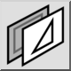
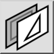
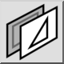
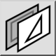

Отменить выделение объектов слоя
Панель инструментов / Иконка:
 

Меню: Слой > Отменить выделение объектов слоя
Горячие клавиши: Y, - | Y, D
Команды: layerdeselect | deselectlayer | y- | yd
Это автоматический перевод.
Панель инструментов / Иконка:
 

Меню: Слой > Отменить выделение объектов слоя
Горячие клавиши: Y, - | Y, D
Команды: layerdeselect | deselectlayer | y- | yd
This tool removes all entities on the current layer from the selection.